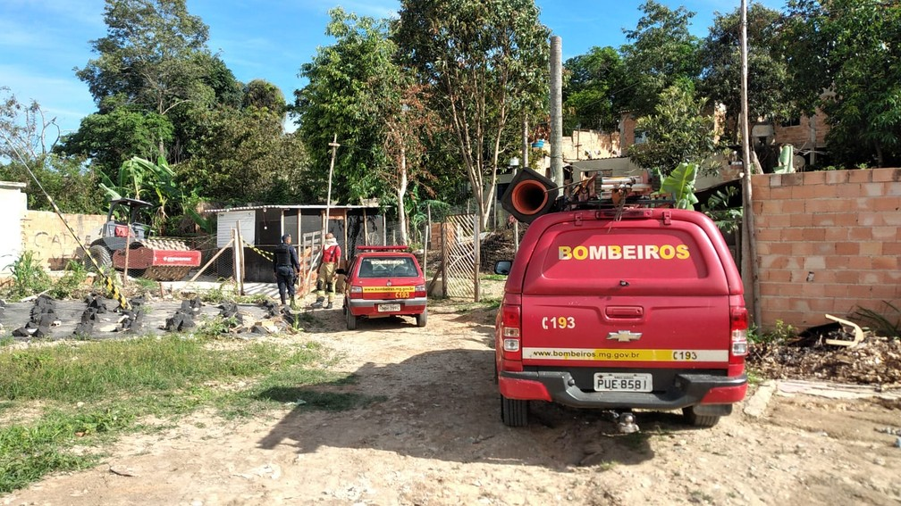

As últimas notícias da cidade em primeira mão para você.
Incidente aconteceu na manhã desta sexta-feira (29) na Rua F, no bairro Nova Contagem.
O aposentado Paulo Josino da Silva, de 73 anos, morreu queimado dentro de casa, no bairro Nova Contagem, em Contagem, na Região Metropolitana de Belo Horizonte, na manhã desta sexta-feira (29).
De acordo com o Corpo de Bombeiros, duas viaturas foram deslocadas até a Rua F, mas, quando chegaram, os militares identificaram que a vítima havia sido carbonizada.
O Serviço de Atendimento Móvel de Urgência (Samu) e a Guarda Civil Municipal também foram acionados.
A Guarda Civil informou ao g1 que ele era uma pessoa querida pelos vizinhos e era carinhosamente chamado de Tio Paulo.
Ainda segundo a corporação, o corpo dele foi encontrado no chão do quarto e a cama tolamente destruída pelas chamas.
A Polícia Civil foi chamada para fazer a perícia e remover o cadáver para o Instituto Médico-Legal (IML).